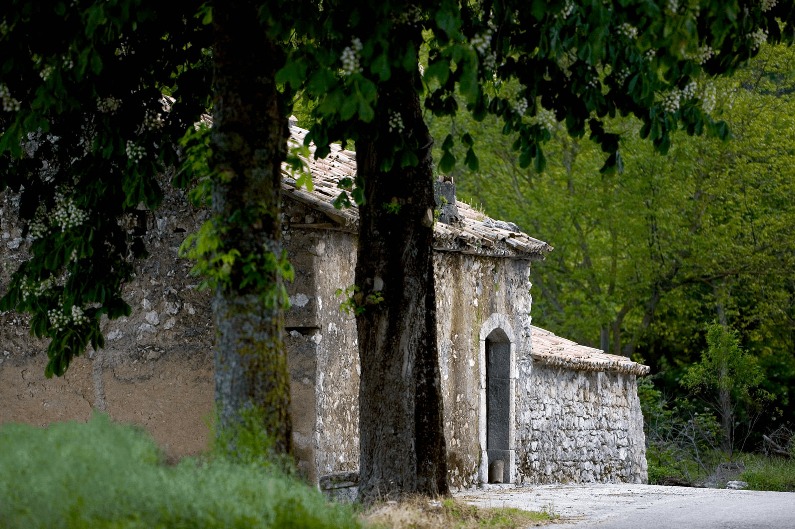
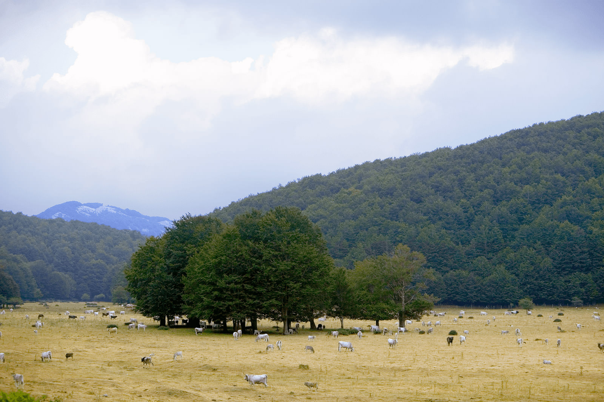
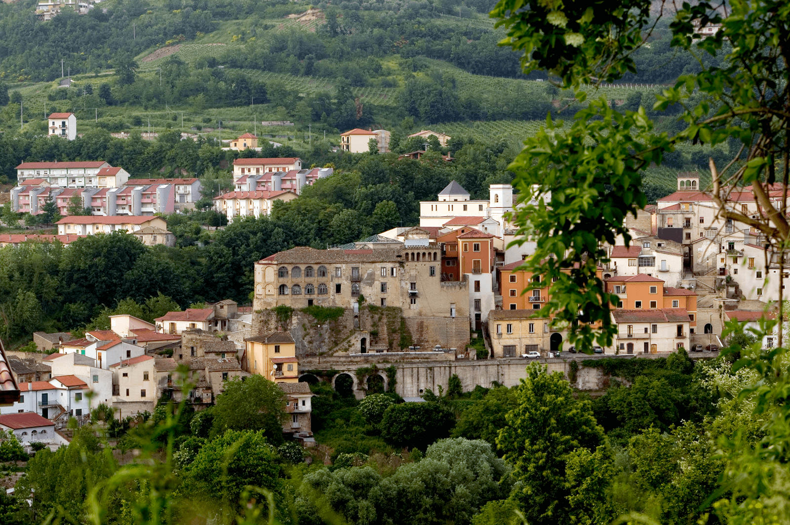
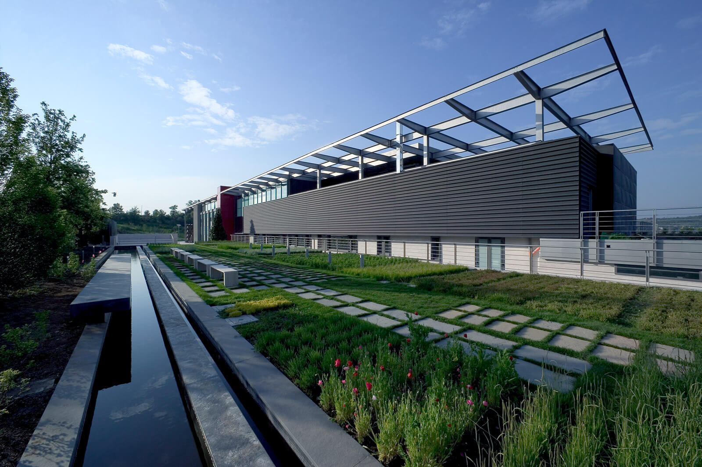
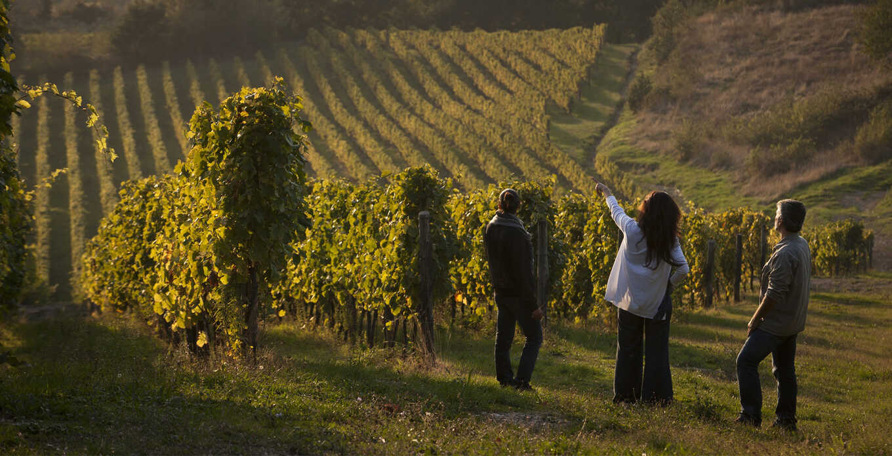
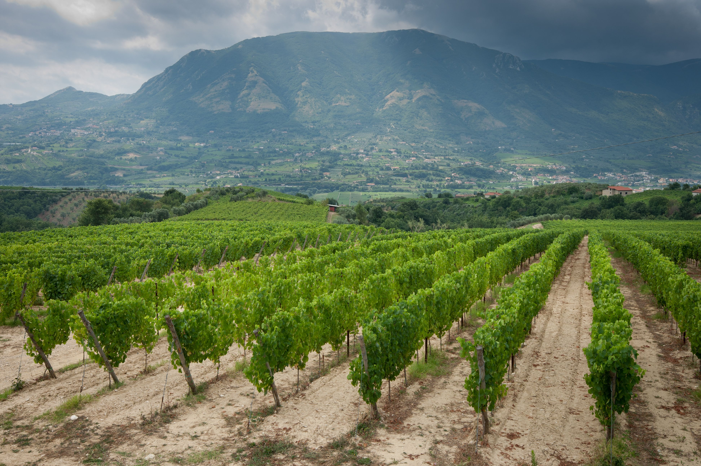
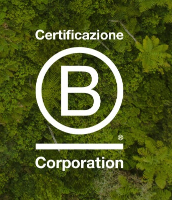

ABBIAMO A CUORE IL FUTURO DEL PIANETA
Gli obiettivi di sostenibilità sono per noi, solo un punto di partenza.

BILANCIO DI SOSTENIBILITÀ
Download Report di SostenibilitàFeudi di San Gregorio considera la sostenibilità parte integrante del proprio modo di fare impresa. Il bilancio di sostenibilità rendiconta i progressi dell'azienda verso gli OBIETTIVI DI SVILUPPO SOSTENIBILE DELLE NAZIONI UNITE , con un impegno concreto che abbraccia persone, territorio e pianeta. La qualità dei prodotti nasce da un modello basato su innovazione, passione e competenza, sostenuto dalla certificazione Equalitas per il settore vitivinicolo. L'azienda crede nella trasparenza come strumento per coinvolgere tutti gli stakeholder e creare valore condiviso, comunicando il proprio impatto attraverso bilanci e relazioni non finanziarie accessibili a tutti.


COMUNITÀ E TERRITORIO
Feudi di San Gregorio presta attenzione ai territori che la circondano, mantenendo un dialogo costante con i confinanti dei propri vigneti tramite questionari periodici, ora distribuiti durante la vendemmia per un rapporto più diretto. La cantina di Feudi di San Gregorio è una cantina senza barriere, essa garantisce l'accessibilità ai diversamente abili attraverso un parcheggio a loro riservato e un apposito percorso di visita della cantina . L'azienda è inoltre attivamente presente nella vita culturale e sociale, alcuni esempi sono il rinnovamento del proprio supporto al festival "I Luoghi della Musica" dell'associazione A.Toscanini e la messa a disposizione spazi e aree verdi aziendali agli scout locali .
ENERGIA RINNOVABILE
La salvaguardia delle risorse naturali è oggi di fondamentale importanza per la sopravvivenza delle future generazioni. Feudi di San Gregorio nella sua visione innovativa e sostenibile ha adottato negli anni per la gestione delle risorse energetiche e naturali una serie di misure protezionistiche lungo tutta la filiera produttiva. Vengono infatti prodotti attraverso impianti fotovoltaici il 40% dell'energia necessaria al proprio fabbisogno e per il restante 60% essa viene acquistata esclusivamente da fonti provenienti da rinnovabili. La modernizzazione degli impianti frigo ha migliorato ulteriormente l'efficienza energetica, riducendo i consumi e l'impatto ambientale della produzione. Inoltre è stato avviato il monitoraggio dei consumi idrici per ogni fase della produzione al fine di effettuare una razionalizzazione degli stessi.


LE PERSONE
Alla base del successo dei Feudi di San Gregorio vi sono le persone . L'Azienda si impegna a garfantire un'ambiente di lavoro sano e inclusivo dove poter valorizzale l'unicità e dove la diversità viene vista come un risorsa preziosa e non un limite. I 130 dipendenti tra donne e uomini risiendono per il 79% in provincia di Avellino, a dimostrazione del forte radicamento nel territorio Irpino. Circa l' 89 % dei collaboratori sono assunti con contratto a tempo indeterminato e vi è una permanenza media in azienda di 12 anni. Vengono promosse lungo tutta la filiera produttiva tantissime ore di formazione a dimostrazione della volontà di accrescere e consolidare le competenze individuali.
RICICLO
Nel corso dell' anno tonnellate di vinaccia sono inviate in distilleria per essere riutilizzate ; i raspi d'uva vengono trasformati in compostaggio per nutrire i vigneti, chiudendo il ciclo naturale della produzione. Tonnellate di materiale tra plastica e carta vengono avviate al riciclo, riducendo al minimo l'impatto ambientale dell'imbottigliamento. Vengono definiti i criteri di scelta e gestione del packaging con il ricorso per quanto possibile a fornitori certificati per gli aspetti ambientali e di sostenibilità.


ALTRE CERTIFICAZIONI
Feudi di San Gregorio opera secondo i più alti standard internazionali di qualità e sostenibilità, certificati dagli enti IFS, FSSC 22000, EQUALITAS e BIO con ente ICEA. La Certificazione B Corporation è un marchio concesso in licenza da B Lab, ente privato no profit, alle aziende che hanno superato con successo i requisiti richiesti in termini di performance sociale e ambientale, responsabilità e trasparenza. Un percorso di certificazione che conferma l'impegno concreto dell'azienda verso un modello di impresa responsabile.
Download Nota Certificazione B Corp.